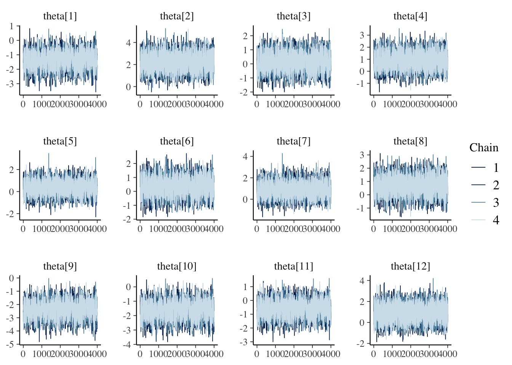

Chapter 7 Extra II: PBO 625 dimensions
7.1 Importing the data
To illustrate and make the analysis we will use 5 as the number of dimensions for the benchmark functions
d_pbo <- read_csv('data/pbo.csv') %>%
select(algId, DIM, funcId, runs, succ, budget) %>%
filter(DIM==625) %>%
mutate(algId_index = as.integer(as.factor(algId)))
#vector with the names in order
benchmarks <- seq(1,23)
algorithms <- levels(as.factor(d_pbo$algId))7.2 Preparing the Stan data
pbo_standata <- list(
N = nrow(d_pbo),
y_succ = as.integer(d_pbo$succ),
N_tries = as.integer(d_pbo$runs),
p = d_pbo$algId_index,
Np = as.integer(length(unique(d_pbo$algId_index))),
item = as.integer(d_pbo$funcId),
Nitem = as.integer(length(unique(d_pbo$funcId)))
)irt2pl <- cmdstan_model('models/irt2pl.stan')
fit_pbo <- irt2pl$sample(
data= pbo_standata,
seed = seed,
chains = 4,
iter_sampling = 4000,
parallel_chains = 4,
max_treedepth = 15
)
fit_pbo$save_object(file='fitted/pbo625.RDS')To load the fitted model to save time in compiling this document
fit_pbo<-readRDS('fitted/pbo625.RDS')7.3 Diagnostics
Getting the draws from the posterior
draws_a <- fit_pbo$draws('a')
draws_b <- fit_pbo$draws('b')
draws_theta <- fit_pbo$draws('theta')7.3.1 Traceplots
mcmc_trace(draws_a)mcmc_trace(draws_b)mcmc_trace(draws_theta)
7.4 Results
fit_summary_a_b <- fit_pbo$summary(c('a','b'))
fit_summary_a <- fit_pbo$summary(c('a'))
fit_summary_b <- fit_pbo$summary(c('b'))
fit_summary_theta <- fit_pbo$summary(c('theta'))7.4.1 Difficulty and discrimination
Table for the benchmark functions
table_benchmarks <- fit_summary_a_b %>%
select('Benchmark ID'=variable,
Median=median,
'CI 5%'=q5,
'CI 95%'=q95)
table_benchmarks$'Benchmark ID'<-rep(benchmarks,2)
kable(table_benchmarks,
caption='Summary values of the discrimination and difficulty level parameters for the PBO benchmarks',
booktabs=T,
digits =3,
format='html',
linesep = "") %>%
kable_styling() %>%
pack_rows("Discrimination value (a)",1,23) %>%
pack_rows("Difficulty level (b)",23,46)| Benchmark ID | Median | CI 5% | CI 95% |
|---|---|---|---|
| Discrimination value (a) | |||
| 1 | 2.919 | 1.210 | 6.017 |
| 2 | 4.455 | 2.635 | 7.121 |
| 3 | 1.431 | 0.775 | 2.507 |
| 4 | 2.936 | 1.199 | 6.089 |
| 5 | 2.693 | 1.115 | 5.857 |
| 6 | 2.679 | 1.095 | 5.898 |
| 7 | 0.425 | 0.258 | 0.709 |
| 8 | 1.402 | 0.875 | 2.193 |
| 9 | 0.596 | 0.271 | 1.050 |
| 10 | 0.160 | 0.098 | 0.259 |
| 11 | 4.982 | 2.801 | 8.026 |
| 12 | 5.966 | 3.669 | 9.031 |
| 13 | 2.267 | 1.229 | 3.941 |
| 14 | 0.429 | 0.261 | 0.713 |
| 15 | 4.119 | 2.726 | 6.184 |
| 16 | 4.124 | 2.717 | 6.154 |
| 17 | 1.154 | 0.507 | 2.025 |
| 18 | 0.430 | 0.261 | 0.714 |
| 19 | 0.474 | 0.204 | 0.851 |
| 20 | 0.833 | 0.506 | 1.272 |
| 21 | 0.387 | 0.149 | 0.698 |
| 22 | 0.355 | 0.207 | 0.605 |
| Difficulty level (b) | |||
| 23 | 0.507 | 0.250 | 0.873 |
| 1 | -3.133 | -4.765 | -1.961 |
| 2 | -1.601 | -2.543 | -0.650 |
| 3 | -3.031 | -4.616 | -1.801 |
| 4 | -3.133 | -4.780 | -1.973 |
| 5 | -3.522 | -5.524 | -2.213 |
| 6 | -3.531 | -5.666 | -2.218 |
| 7 | 5.279 | 3.149 | 8.293 |
| 8 | -1.929 | -3.020 | -0.898 |
| 9 | -1.334 | -2.901 | -0.219 |
| 10 | 6.256 | 3.759 | 9.466 |
| 11 | -2.276 | -3.269 | -1.288 |
| 12 | -2.132 | -3.109 | -1.159 |
| 13 | -2.599 | -3.765 | -1.529 |
| 14 | 5.439 | 3.279 | 8.445 |
| 15 | -1.146 | -2.068 | -0.220 |
| 16 | -1.142 | -2.083 | -0.220 |
| 17 | 1.434 | 0.381 | 2.766 |
| 18 | 5.402 | 3.274 | 8.395 |
| 19 | 1.347 | 0.176 | 3.052 |
| 20 | -0.323 | -1.295 | 0.624 |
| 21 | -1.083 | -2.847 | 0.136 |
| 22 | 4.730 | 2.659 | 7.668 |
| 23 | 2.017 | 0.748 | 3.890 |
mcmc_intervals(draws_a) +
scale_y_discrete(labels=benchmarks)+
labs(x='Discrimination parameter (a)',
y='Benchmark function ID',
title='Discrimination parameter distribution (PBO)')## Scale for 'y' is already present. Adding another scale for 'y', which will
## replace the existing scale.mcmc_intervals(draws_b) +
scale_y_discrete(labels=benchmarks)+
labs(x='Difficulty level parameter (b)',
y='Benchmark function ID',
title='Difficulty level parameter distribution (PBO)')## Scale for 'y' is already present. Adding another scale for 'y', which will
## replace the existing scale.7.4.2 Ability
Creating a table
table_algorithms <- fit_summary_theta %>%
select(Algorithms=variable,
Median=median,
'CI 5%'=q5,
'CI 95%'=q95)
table_algorithms$Algorithms <- algorithms
kable(table_algorithms,
caption='Summary values of the ability level of the algorithms (PBO)',
booktabs=T,
digits =3,
format='html',
linesep = "") %>%
kable_styling() | Algorithms | Median | CI 5% | CI 95% |
|---|---|---|---|
| (1+(λ,λ)) GA | -1.371 | -2.306 | -0.437 |
| (1+1) EA_>0 | 2.184 | 1.027 | 3.383 |
| (1+1) fGA | 0.139 | -0.831 | 1.150 |
| (1+10) EA_{r/2,2r} | 0.865 | -0.177 | 1.949 |
| (1+10) EA_>0 | 0.340 | -0.634 | 1.346 |
| (1+10) EA_logNormal | 0.330 | -0.652 | 1.345 |
| (1+10) EA_normalized | 0.853 | -0.177 | 1.926 |
| (1+10) EA_var_ctrl | 0.625 | -0.384 | 1.709 |
| (30,30) vGA | -2.402 | -3.382 | -1.426 |
| EDA | -1.643 | -2.587 | -0.694 |
| gHC | -0.629 | -1.557 | 0.302 |
| RLS | 0.935 | -0.312 | 2.158 |
mcmc_intervals(draws_theta) +
scale_y_discrete(labels=algorithms)+
labs(x=unname(TeX("Ability level ($\\theta$)")),
y='Algorithm',
title='Ability level parameter distribution (PBO)')## Scale for 'y' is already present. Adding another scale for 'y', which will
## replace the existing scale.7.4.3 Item information
We will use the same functions from the BBOB case study
Creating a single data frame
item_information_df <- NULL
for(i in seq(1:length(benchmarks))){
a<-as.matrix(fit_summary_a[i,c(3,6,7)])
b<-as.matrix(fit_summary_b[i,c(3,6,7)])
iinfo <- item_info_with_intervals(a=a,b=b,item = i,thetamin = -7, thetamax = 5)
item_information_df <- rbind(item_information_df,iinfo)
}Now we can create an information plot for every item
item_information_df %>%
pivot_wider(names_from = 'pars', values_from = 'Information') %>%
ggplot(aes(x=theta))+
geom_line(aes(y=median), color='black')+
# geom_line(aes(y=q05), color='red', linetype='dashed')+
# geom_line(aes(y=q95), color='blue', linetype='dashed')+
facet_wrap(~item,
ncol=4) +
labs(title='Item information curve (PBO)',
x=unname(TeX("Ability ($\\theta$)")),
y='Information',
color='Information interval')+
theme_bw() +
theme(legend.position = 'bottom')7.4.4 Test information
We can also look at the test information. First, we need to pivot wider so we can sum the items
test_information_df <- item_information_df %>%
pivot_wider(names_from = 'item', values_from = 'Information') %>%
mutate(TestInfo = dplyr::select(., -theta, -pars) %>% rowSums()) %>%
dplyr::select(theta, pars, TestInfo)Now that we have calculated the test parameters we can plot the test information
First let’s get a horizontal line to show where the algorithms median ability lies
alg_median <- fit_summary_theta %>%
mutate(Algorithm=algorithms) %>%
select(Algorithm, median) test_information_df %>%
dplyr::select(theta, pars, TestInfo) %>%
pivot_wider(names_from = 'pars', values_from = 'TestInfo') %>%
ggplot(aes(x=theta)) +
geom_line(aes(y=median))+
geom_vline(data=alg_median, aes(xintercept=median,color=Algorithm),linetype='dashed')+
labs(
title='Test Information Curve (PBO)',
x=unname(TeX("Ability ($\\theta$)")),
y='Test information',
color='Algorithm median'
)+
theme_bw()+
guides(color=guide_legend(nrow=5,byrow=TRUE))+
theme(legend.position = 'bottom')